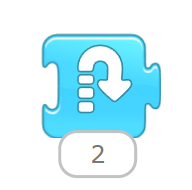
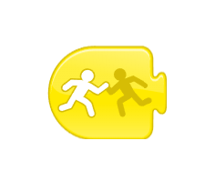

Самостоятельная работа
Задание 1
Задачи:
Тик просто ходит по комнате (сцене) бесконечно.
Задание 2
Задачи:
- Тик идёт вдоль сцены
- Тик прыгает в местах, где есть пятна света.
Подсказки:
Чтобы Тик прыгал, надо использовать такой синий блок:

Задание 3
Задачи:
- Тик идёт по комнате
- Тик НЕ задевает красный коврик посередине комнаты.
Задание 4
Задачи:
- Тик идёт к машине и дотрагивается до неё
- Машина уезжает в конец комнаты.
Подсказки:
Чтобы "каснуться" чего-то, надо использовать такой жёлтый блок:
